1、概述
易语言和火山视窗的文件读写命令共有两个差异，分别如下：
(1) 易语言使用时无需定义变量即可操作，在火山视窗中需要定义“文件读写类”变量才可以操作。
(2) 易语言中文件读写中文本相关的操作命令，都采用的是多字节编码，而在火山视窗中的对应命令都采用的是Unicode编码。因此如果有易语言项目转火山项目时要额外注意这一点，需要提前将文本文件转换成Unicode编码的才可以使用火山视窗进行文件读写。
下面以文件读写中的文本命令，演示如何使用火山视窗中的文件读写。
2、读入文本
易语言演示：
在易语言中虽然无需创建对象即可使用，但是依然需要一个整数变量来存储文件句柄。
在文件操作完毕后需要调用“关闭文件()”方法手动关闭。
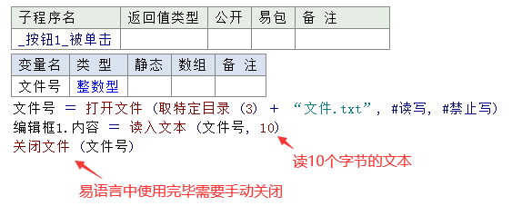
运行效果如下：
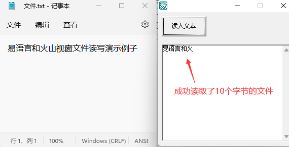
火山演示：
在火山中需要定义“文件读写类”变量，在操作文件完毕后可以选择性的决定是否调用“文件.关闭文件()”方法来关闭。
推荐使用完毕后手动关闭文件。
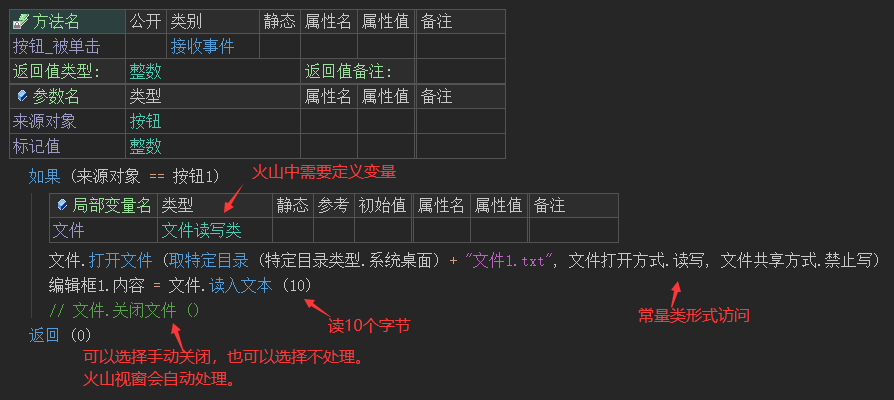
运行效果如下：
注：虽然都是读取10个字节，但火山视窗中实际读取的文本长度较长，这是因为ansi编码和UTF-16LE编码的长度不同导致的。
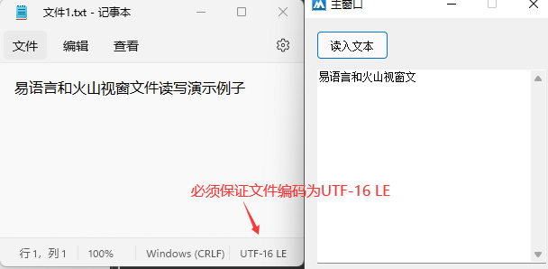
3、读入一行
易语言演示：
打开文件后调用“读入一行()”就可以读取内容到编辑框中。
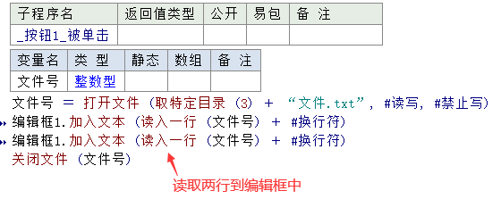
运行效果如下：
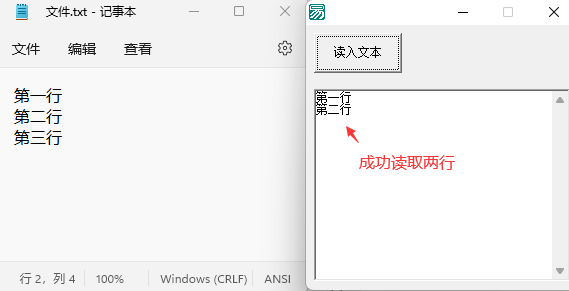
火山演示：
打开文件后调用“文件.读入一行()”就可以读取一行文本到编辑框中。
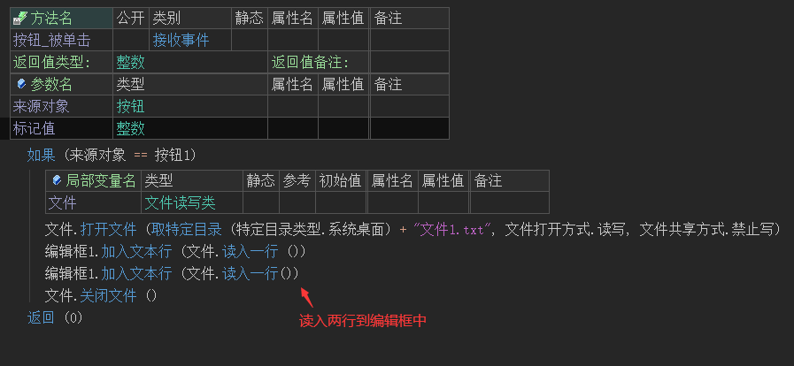
运行效果如下：
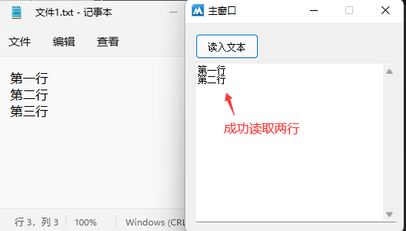
4、写出文本
易语言演示：
打开文件后调用本方法就可以写出文本内容到文件中。
注：如果想要读入文件内容，必须关闭文件后才可以读取。
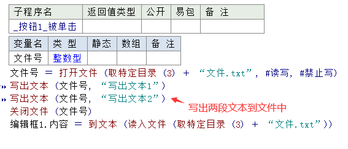
运行效果如下：
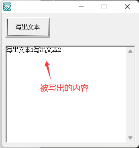
火山演示：
打开文件后就可以调用“文件.写出文本()”方法写出文本到文件中。
在火山视窗中同样也需要关闭文件后才可以读取内容。
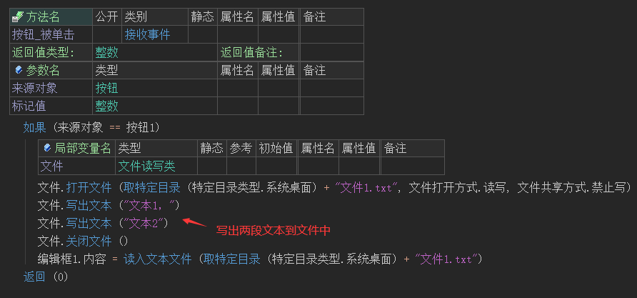
运行效果如下：
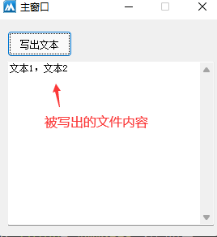
5、写文本行
易语言演示：
打开文件后调用“写文本行()”方法就可以写出一行文本到文件中。
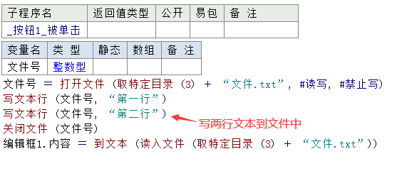
运行效果如下：
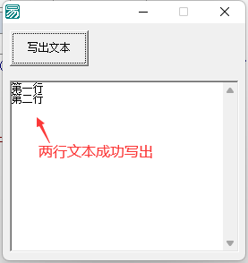
火山演示：
打开文件后调用“文件.写文本行()”方法就可以写出一行文本到文件中。
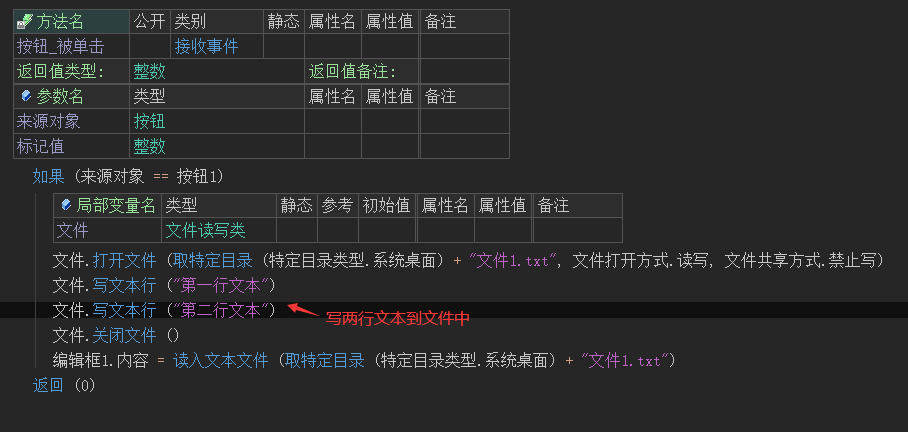
运行效果如下：
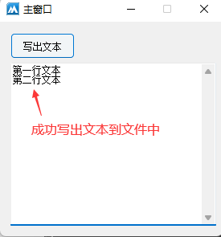